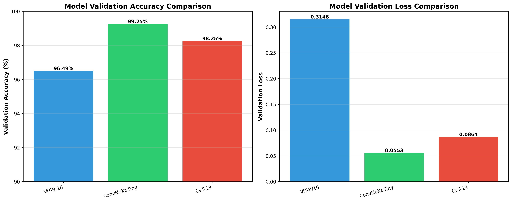

📈 Performance Comparison

📊 Detailed Results
| Model Architecture | Validation Accuracy | Validation Loss | Latest Epoch | Status |
|---|---|---|---|---|
| ViT-B/16 | 96.49% | 0.3148 | 1.33 / 10 | In Progress 3 checkpoints |
| ConvNeXt-Tiny | 99.25% | 0.0553 | 4.89 / 10 | In Progress 2 checkpoints |
| CvT-13 | 98.25% | 0.0864 | 5.78 / 10 | In Progress 2 checkpoints |
🎯 Dataset Information
Training Configuration
- Total Images: 4,980 images
- Disease Classes: 10 categories
- Classes: Avian Influenza, Coccidiosis, Fowl Pox, Healthy, Histomoniasis, Infectious Bronchitis, Infectious Bursal Disease, Marek's Disease, Newcastle Disease, Salmonella
- Data Split: 72% Train (3,585), 8% Val (399), 20% Test (996)
- Image Size: 224×224 pixels
- Batch Size: 16
- Max Epochs: 10 (with early stopping)
- Hardware: NVIDIA GeForce RTX 3050 Laptop GPU (CUDA 11.8)
💡 Key Insights
🏆 Best Performer
ConvNeXt-Tiny achieved the highest validation accuracy of 99.25%, demonstrating excellent generalization on the validation set.
📊 Consistent Results
All models achieved over 96% validation accuracy, indicating that the dataset is well-structured and all architectures are suitable for this classification task.
⚡ Training Efficiency
Models converged quickly, with ConvNeXt and CvT reaching peak performance around epoch 5, showing efficient learning on the poultry disease dataset.
📁 Output Directories
| Model | Output Directory | Contents |
|---|---|---|
| ViT-B/16 | vit_poultry_results/ |
Model checkpoints, training state, confusion matrix |
| ResNeXt-50 | resnext_poultry_results/ |
Best model weights, evaluation metrics |
| ResNeSt-50d | resnest_poultry_results/ |
Best model weights, evaluation metrics |
| ConvNeXt-Tiny | convnext_poultry_results/ |
Model checkpoints, training state, confusion matrix |
| CvT-13 | cvt_poultry_results/ |
Model checkpoints, training state, confusion matrix |